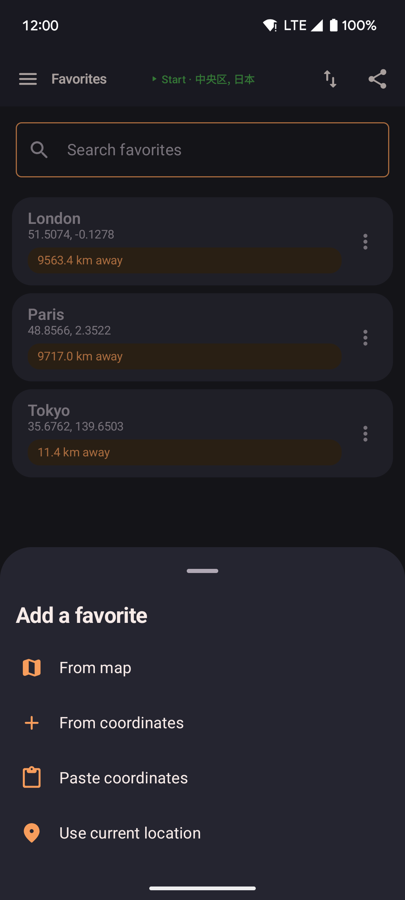

Favorites
Save named places and jump to any of them right away. Favorites show up both on the Favorites screen and in the map's favorites sheet, so you can reach them without leaving the map.

- Tap a favorite to walk there (straight line or via roads) or teleport there right away.
- Long-press a favorite to rename or delete it.
- Add a favorite by typing in coordinates directly, or by picking a point on the map.
Search and categories
A search box at the top of the Favorites screen finds locations by name as you type. Locations that belong to a named area, such as the curated spots described below, are grouped together under that area's name, which makes a long list easier to browse. Locations without an area are shown on their own at the bottom.
How to add a favorite
Tap the add button at the bottom-right of the Favorites screen to add a new location.

- The button opens a menu with every way to add a favorite.
- Choose "From coordinates" to type a location in by hand, "From map" to pick a point on the map, or "Use current location" to save where you are right now.
Hot locations
In Settings, under Favorites, turning on Show hot locations adds a curated list of popular spots around the world to your favorites: cities, parks, and landmarks that come in handy for spoofing your location. This is off by default.
- Turning it off removes only the entries this feature added. Your own favorites are never touched.
- The setting sticks across app restarts and is included when you export or import your data.
- Each curated spot keeps its country as its area name once added, so it stays grouped in the Favorites list.
Map picker
When you add a favorite "from map," a full-screen map opens. Tap to place a pin, or use the search bar to find a location by name. See Settings → External services for what's shared with the search provider.

- Search by place name to jump the map to a specific address or landmark.
- Tap the map to move the pin to any exact spot.
- Confirm to save it with a name of your choice.